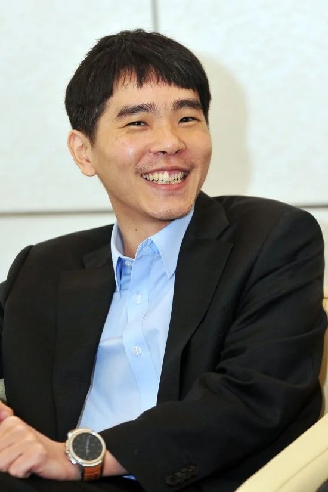

시대를 뒤흔든 불패의 승부사, 이세돌 9단

이세돌 (李世乭)
출생 : 1983년 3월 2일 (전라남도 신안군 비금도)
입단 : 1995년 (만 12세 입단)
소속 : 前 한국기원 프로기사 9단 (2019년 은퇴)
주요 타이틀 : 세계대회 14회 우승 (역대 2위), 국내외 통산 50회 이상 우승
주요 커리어 및 대기록
- 조훈현-이창호의 뒤를 이어 2000년대 세계 바둑계를 평정한 1인자
- 세계 메이저 기전(삼성화재배, LG배, 후지쯔배 등)을 휩쓴 압도적 커리어
- 인공지능(AI) '알파고'를 상대로 인류 최초이자 마지막 1승을 거둔 기사
- 독창적이고 변칙적인 수읽기로 전 세계 바둑 팬들을 매료시킨 '비금도 천재'
날카로운 칼날 같은 바둑, 그리고 인류의 자존심을 지킨 신의 한 수
이세돌 9단은 바둑 역사상 가장 공격적이고 화려한 수읽기를 구사했던 천재 기사입니다. 계산력과 두터움을 중시하던 기존의 패러다임을 깨부수고, 상대의 돌을 끊임없이 흔들며 난전을 유도하는 '날쎈바둑' 스타일로 한 시대를 풍미했습니다. 판을 읽는 동물적인 감각과 타협 없는 승부 근성은 그를 '불패의 소년'으로 만들었습니다.
그의 커리어에서 절대 빼놓을 수 없는 불멸의 사건은 바로 2016년에 펼쳐진 구글 딥마인드의 인공지능 '알파고(AlphaGo)'와의 구백년 바둑 역사상 가장 거대한 대결이었습니다. 당시 모두가 인류의 승리를 점쳤으나, 알파고의 압도적인 계산력 앞에 이세돌은 연이은 패배를 당하며 큰 충격을 안겼습니다. 슈퍼컴퓨터의 완벽한 수읽기 앞에 인류의 무력감이 극에 달했던 순간이었습니다.
"알파고가 이긴 것이지, 인간이 패배한 것은 아니다."
하지만 이세돌은 꺾이지 않았습니다. 제4국, 인공지능의 가치판단을 완벽하게 마비시킨 '신의 한 수'라 불리는 제78수를 터뜨리며 알파고의 버그와 기권(Resign)을 이끌어냈습니다. 이 승리는 컴퓨터 과학 역사와 바둑 역사를 통틀어 **인간이 AI를 상대로 거둔 최초이자 유일한 1승**으로 기록되었습니다. 패배 앞에서도 당당하게 맞서 싸운 그의 투혼은 바둑을 모르는 대중들에게까지 깊은 감동을 선사했습니다.